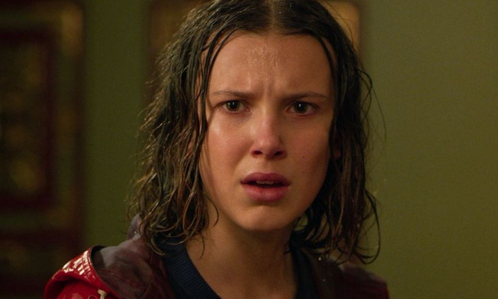
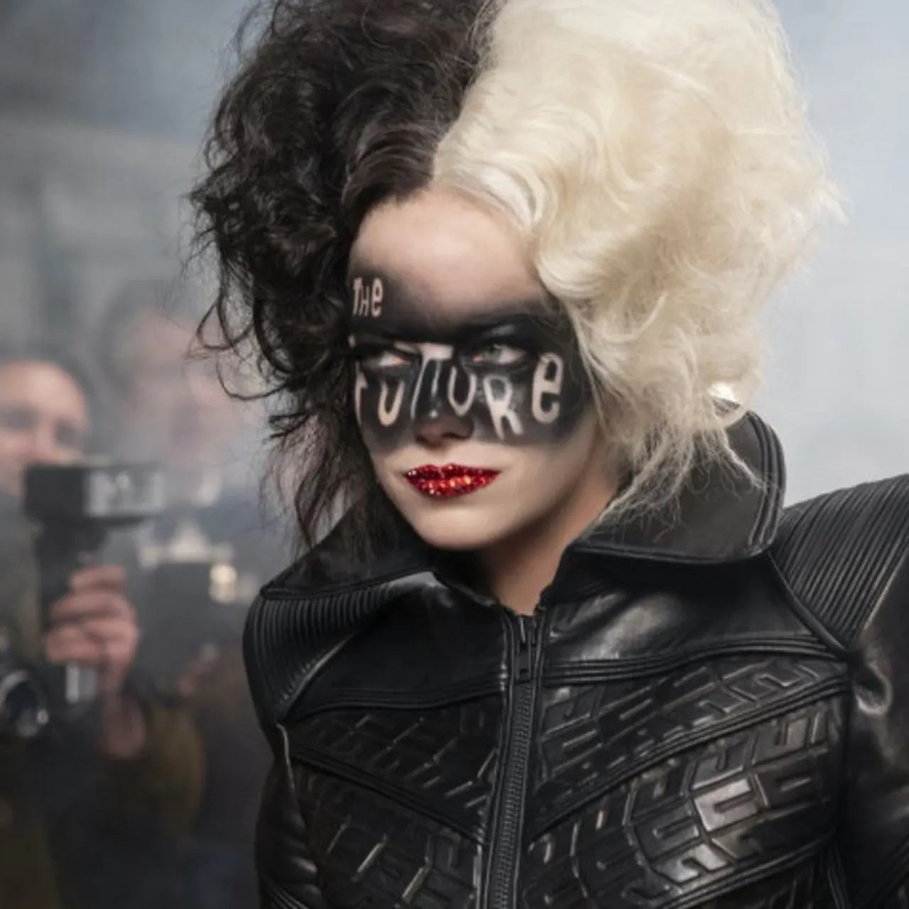

¿Eleven morirá?: Nuevas imágenes filtradas de Stranger Things
16 de junio, 2021

Se filtraron nuevas imágenes de la cuarta temporada de Stranger Things. Aparentemente, Eleven podría
estar en peligro.
No hay dudas de que los fanáticos de Stranger Things están muy ansiosos por ver qué
sucederá en la cuarta temporada,
la cual contará con la protagonista de Anne with an E. Aparentemente, esta nueva entrega de la serie
de Netflix
buscará atrapar nuevamente a los espectadores con una historia más trágica, donde veremos sufrir a
los personajes
más queridos por los fans. Y por las nuevas imágenes filtradas, Eleven será una de ellos.
Eleven, el personaje interpretado por Millie Bobby Brown, se robó los corazones de todos los
espectadores desde la
primera temporada de Stranger Things. Es uno de los personajes claves en la historia y siempre ha
tenido mucho
protagonismo. Pero parece que en esta nueva temporada, el personaje deberá enfrentarse a nuevas
complicaciones y
puede que salga lastimada.
Leer más
Cruella: el rugido de una villana mítica
6 de junio, 2021

Se estrenó en la plataforma de Disney Plus, una de las películas más esperadas del
año. Protagonizada
por Emma Stone y ambientada en una Londres en pleno auge de los 70’s, narra los orígenes de una
de las villanas más
odiadas del universo animado. En cinéfilos ya la vimos y te contamos qué nos pareció.
En 1994 puede situarse la génesis de los famosos live action de Disney, con la
llegada de una nueva versión de “El libro de la selva” que pasó sin demasiada pena ni gloria, sobre
todo comparada con su fresca versión animada de 1967. Fue en 1996 el momento del estreno de “101
Dálmatas”, reversionando el clásico infantil de 1961, con la fabulosa Glenn Close a la cabeza del
proyecto dándole vida a una de las villanas más populares de la historia del cine: Cruella De Vil.
La película funcionó gracias al carisma inigualable de Close, fórmula que intentaron replicar en
“102 Dálmatas” (2000) y que resultó ser un fracaso comercial.
Corría el año 2010 y arribaba a los cines una de las películas más esperadas de la franquicia de
Disney: la adaptación del clásico literario “Alicia en el país de las maravillas” (2010) dentro de
un nuevo formato live action. El encargado de tamaña labor, fue nada más y nada menos que el
reconocido y talentoso cineasta Tim Burton. Las expectativas fueron altas, pero el producto final
resultó decepcionante. Todos los recursos estilísticos- producto de una avanzada manufactura
digital- daban cuenta de la grandilocuencia de una superproducción que anhelaba aterrizar con fuerza
y arrebatar una vez más los corazones del público más fiel a una de las obras infantiles más
queridas de la historia literaria y cinematográfica.
Leer más